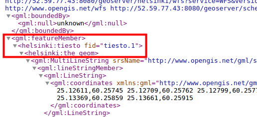
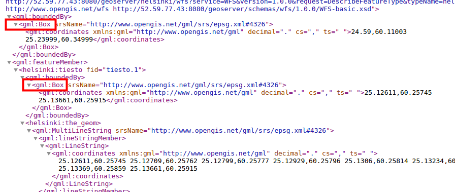
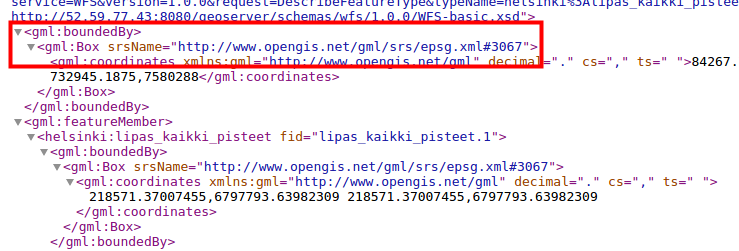
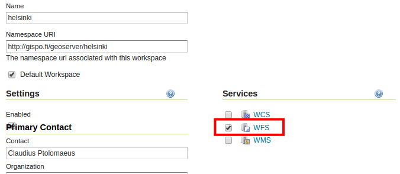

HARJOITUS 2.1: WFS-PALVELUT
Harjoituksen sisältö
Harjoituksessa tutustutaan WFS-karttapalvelujen asetuksiin ja toiminnallisuuteen.
Harjoituksen tavoite
Harjoituksen jälkeen opiskelija osaa muuttaa WFS-karttapalvelujen julkaisuasetukset ja käyttää WFS-T-karttapalvelua.
Arvioitu kesto
30 minuuttia.
Valmistautuminen
GeoServeriin on lisätty storeja, joissa on vektoriaineistoja.
OGC-standardit
Aiemmin tarkasteltiin Open Geospatial Consortiumin (OGC) määrittämien WMS- ja WCS-rajapintapalvelujen asetuksia. Web Feature Service (WFS) -latauspalvelu on myös OGC:n määrittelemä rajapintapalvelu, jonka kautta vektoriaineistoja ja niiden ominaisuustietoja voi ladata edelleen hyödynnettäväksi.
WFS-asetukset
WFS-palveluiden avulla voidaan käsitellä vektoriaineistoja sekä niiden geometria- ja attribuuttitietoja verkon yli.
Avaa Services → WFS. Heti näkymän alusta löytyy palvelun yleistiedot (Service Metadata).
WFS-kohtaiset asetukset löytyvät alempaa, josta määritellään, miten WFS-kohtaisia palvelupyyntöjä käsitellään ja miten niihin vastataan.
Tietomäärä pyynnöissä
Maximum number of features ja Maximum number of features for preview estävät liian ison aineistomäärän lataamisen. Jos latauspyyntö sisältää paljon kohteita (features), niin vain osa niistä latautuu.
Toiminnon testaamista varten määrittele kyseisten ominaisuuksien arvoksi 1.
Paina sitten Submit.
Katsele sen jälkeen tiesto-tasoa WFS-rajapinnan kautta Layer Previewin GML-esikatselun kauttatai esim. QGIS-sovelluksella.
Miten äsken määritellyt ominaisuudet ovat vaikuttaneet lopputulokseen? Miksi?
Esikatsele samaa tiesto-tasoa nyt käyttäen GML-linkkiä.


Palvelun vastaus (xml-muodossa) sisältää nyt vain yhden geometrian, kuten olimme määritelleet asetuksissa.
Palaa vielä Services → WFS-näkymään ja rastita Return bounding box with every feature. Esikatsele taas samaa tasoa ja vertaile sitä aiemman palvelupyynnön tulokseen. Tietyissä sovelluksissa voi olla tarpeen saada tiedot jokaisen paikkatietokohteen sijainnin rajauksesta (bounding box).
Tarkista tiesto-tason GML-esikatselusta, että GeoServerin lähettämä vastaus sisältää nyt myös geometrioita rajaavan suorakaiteen.

Palaa uudelleen Services → WFS -näkymään ja palauttaa oletuksiin Maximum number of features: 1 000 000 ja Maximum number of features for preview: 50.
Paina Submit.
Voit vielä tarkistaa, että nyt GML-esikatselussa tulee vain 50:n kohteen geometriat, vaikka tiesto-tasolla on paljon enemmän paikkatietokohteita.
Psst! “Maximum number of features for preview” on tärkeä asetus, jolla saa rajattua WFS-pyyntöjen tuloksien määrää tason esikatselutilassa. Saat helposti tietokoneen jumiin, jos kaikki tason tiedot tulevat vastauksena yhtä aikaa.
Useiden koordinaattijärjestelmien määrittäminen
GeoServer pystyy projisoimaan aineistoa ja palvelemaan sitä kaikissa yli 5000:ssa tuetussa koordinaattijärjestelmässä. On kuitenkin huomioitava, että palvelimessa käytössä olevat järjestelmät on määriteltävä käsin sen sijaan, että kaikki 5000+ koordinaattijärjestelmää tulisi ilmoitettua GetCapabilities-pyynnön kautta.
Psst! Tämä asetus vaikuttaa vain GetCapabilities-pyynnön sisältöön; projisointi onnistuu edelleen käyttämällä mitä tahansa client-järjestelmää (esim. paikkatieto-ohjelmistoa).
Määrittele Extra SRS codes for WFS capabilities generation -kentässä käytetyt koordinaattijärjestelmät pilkulla eroteltuina: 4326, 3047, 3067.
Mitkä koordinaattijärjestelmät ovat kyseessä?
Voit tarkistaa nyt, että WFS-toiminnallisuuksien dokumentissa yllä mainitut koordinaattijärjestelmät ovat ilmoitettuna.
Paina GeoServer-logoa vasemmasta yläkulmasta (palaa siis web-käyttöliittymän etusivulle) ja sen jälkeen valitse sivun oikealta laidalta WFS → 1.1.0 tai 2.0.0.
Etsimällä “EPSG” sivulta löydät EPSG-koodit WFS-palvelun dokumentaatiosta (xm-formaatissa):
Huomaa, ettei tämä asetus toimi WFS 1.0.0, sillä siinä ilmoitetaan EPSG-koodit vain tasokohtaisesti.

Service Levels
GeoServerissa voidaan julkaista vektoriaineisto editoitavaksi WFS-T (Transactional) -palvelun avulla.
Service Level -valinnat määrittävät millaisen palvelutason WFS tarjoaa.
Basic |
Tarjoaa perustoiminnallisuuden: GetCapabilities, DescribeFeatureType ja GetFeature |
Transactional |
(WFS-T) perustoiminnallisuuden lisäksi transaktio-toiminto on käytettävissä |
Complete |
Lisää vielä LockFeature-tuen, joka estää paikkatietokohteiden (feature) muokkauksen sen jälkeen, kun toinen käyttäjä on jo aloittanut kohteiden muokkauksen |
Jätä asetus Complete-tasolle. GeoServer sallii oletuksena aineistojen muokkauksen vain admin-ryhmään kuuluville käyttäjille, eivätkä tunnistautumattomat käyttäjät pysty muokkaamaan aineistoja. Basic-tasoa voidaan käyttää, jos halutaan estää täysin aineistojen muokkaus WFS-T:n avulla.
GML-asetukset
GML on XML:ään perustuva kieli, jonka OGC on määrittänyt. GML käytetään mallintamaan geometriaelementtejä. GeoServer tuottaa vektoriaineistoja GML-muotoisina.
Erilaiset WFS-palvelun versiot palauttavat oletuksena eri GML-formaatit:
WFS 1.0.0 |
GML 2 |
WFS 1.1.0 |
GML 3 |
WFS 2.0.0 |
GML 3.2 |
Jokaiselle GML-formaatille on mahdollista määritellä koordinaattijärjestelmäformaatti, joka tulee ottaa huomioon GML-tuloksessa. Tämä on tärkeä etenkin kun kehitetään WFS-palveluita hyödyntäviä sovelluksia.
EPSG-KOODIT JA KOORDINAATIEN FORMAATIT GML-DOKUMENTISSA
| EPSG Code | srsName=“EPSG:4326” Koordinaatit formaatissa: longitude/latitude (x/y) |
| OGC HTTP URL | srsName=“http://www.opengis.net/gml/srs/epsg.xml#4326” Koordinaatit formaatissa: longitude/latitude (x/y) |
| OGC Experimental URN | srsName=“urn:x-ogc:def:crs:EPSG:4326” |
| OGC URN | srsName=“urn:ogc:def:crs:EPSG::4326” Koordinaatit formaatissa: latitude/longitude (y/x) |
| OGC HTTP URI | srsName=“http://www.opengis.net/def/crs/EPSG/0/4326” |
Esimerkiksi Lipas-alueet-taso GML2-esikatselusta (EPSG-koodi muodossa OGC HTTP URL):

Workspace kohtaiset asetukset
Samalla tavalla kun WMS-palvelujen kanssa, myös WFS-asetuksia on mahdollista määrittää workspace-kohtaisesti. Esimerkiksi WFS-T toiminnallisuus voidaan sallia vain yhden workspacen kautta ja pääsynhallinnan avulla sallia vain tunnistetut käyttäjät muokkaamaan aineistoja.
Avaa Data → Workspaces ja valitse sitten helsinki-workspace. Rastita sitten Services → WFS ja paina sen jälkeen WFS-linkkiä.

Varmista, että Service Level asetus on Complete.

Paina sen jälkeen Submit (sivun lopussa).
Paina lopuksi vielä Save sivun alaosasta.
Workspace-kohtaisilla asetuksilla voidaan esim. rajoi
ttaa, missä koordinaattijärjestelmissä workspacen aineistot ovat saatavilla, tai poistaa WFS-T -palvelu tietyn workspacen aineistoista.
Editointi WFS-T-palvelun kautta
Yksi tärkeä ominaisuus WFS-palveluissa on mahdollisuus editoida vektoriaineistoja suoraan palvelimessa. WFS-T-palvelulle voidaan myös asettaa lukitus-mahdollisuus (Complete service-taso), joka on tarpeellinen tehdessä editointeja jaetulla aineistolla.
Editointia voidaan tehdä eri client-ohjelmistojen avulla, esimerkiksi QGISin tai web-sovellusten kautta.
Helpoiten saadaan testattua editointi-toiminnallisuutta QGIS-paikkatietojärjestelmän avulla.
Tarvitaan ensin WFS-palvelun osoite. Saat tämän esimerkiksi GeoServerin etusivulta, jonne pääset klikkaamalla vasemman yläkulman GeoServer-logoa. Klikkaa hiiren oikealla painikkeella etusivun Service Capabilities-paneelin WFS-kohdan alla olevaa linkkiä 1.1.0.
Osoite on muotoa:
GeoServerin oletusasetuksilla workspace-kohtaisen osoitteen saa lisäämällä osoitteeseen workspacen URI:n. Esimerkiksi helsinki-workspacen osoite olisi:
Avaa QGIS työpöydän pikakuvakkeesta. Lisää uusi WFS-palvelu ja liitä URL-kenttään äsken kopioimasi osoite. Syötä myös käyttäjänimi (admin) sekä salasana (gispo).

Tarvittaessa, seuraa kouluttajan ohjeita QGISin käytössä. Yhdistä QGIS omaan WFS-karttapalveluusi, lisää karttaprojektiin lipas_kaikki_reitit-taso, jonka lisäsit aiemmin toisessa harjoituksessa. Editoi joitakin paikkatietokohteita ja tallenna muutokset.
Katso jälkeenpäin GeoServerin esikatselusta editoimasi kohteet ja totea, että muutokset ovat todella tallentuneet palvelimeen.
Muiden WFS-palvelujen hyödyntäminen (cascading WFS)
Samalla tavalla kun on mahdollista edelleen julkaista WMS-palveluja (cascading WMS), niin GeoServerin avulla voidaan myös edelleen julkaista WFS-palveluja (cascading WFS).
Lisää uusi store (Data → Stores → Add new Store), valitse Web Feature Server (NG) listalta.

Lisätään Lipas-WFS palvelu. Nimeä uusi vektori-store lipas_WFS ja laittaa WFS GetCapabilities URL arvoksi:

Loput asetukset voit jättää oletusarvoihin. Paina sitten Save.
Uusi store sisältää karttatasoja, jotka on jaettu alkuperäisessä WFS-palvelimessa:

Voit julkaista tasoja suoraan palvelusta. Julkaise esimerkiksi lipas_retkikartta_reitit. Paina oikealta Publish ja määrittele Bounding Boxes totutulla tavalla.
Paina sitten Save.
Voit nyt esikatsella uutta tasoa (oletusnimeksi tulee retkikartta_reitit).

Psst! Mikäli aineisto on suuri ja maksimilatausaika on määritelty alhaiseksi, GeoServer voi tuottaa error-koodin kun aineistoa ei saada ladattua määrättyyn aikaan mennessä. Muuta tätä aikaa, mikäli aineisto on suuri.